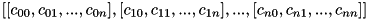

|
PLATO Simulator
3.0
An end-to-end simulator for the Plato mission.
|
To configure the Plato Simulator, a large set of input parameters is required. The input file format use for PlatoSim3 is YAML. We use only a very limited set of the YAML functionality, enough to allow us to provide input files for different parts of the simulator.
Any desired simulation can be obtained by modifying the following input:
In the following sections we describe these parameters for the simulations in detail.
The configuration parameters for the simulation are stored in a YAML file, e.g. inputfile.yaml, in the /inputfiles directory. This section describes the parameters in the different blocks of the configuration file. These blocks reflect their function in the simulation.
The general configuration parameters a listed in the General block of the configuration file. The structure of this block is the following:
Allowed values: name of an existing directory on disk or environment variable in the format ENV['PLATO_PROJECT_HOME']
Full path of the directory in which you have checked out the PlatoSim3 project, or an environment variable, e.g. PLATO_PROJECT_HOME, containing the full path to that directory. In the latter case, you must make sure you have exported this variable before initiating a simulation:
The ObservingParameters block of the configuration file contains the configuration parameters that are specific to the simulated observation and are not specific for the hardware components of the satellite. The structure of this block is the following:
Allowed values: > 0
Number of exposures to generate in the simulation.
Allowed values: > 0
Integration time of one exposure, expressed in seconds. Note that the total integration time is the sum of the exposure and the readout time:
Allowed values: ∈ [0, 360]
Right ascension of the pointing, expressed in degrees.
Allowed values: ∈ [-90, 90]
Declination of the pointing, expressed in degrees.
Allowed values: > 0
Flux of a star of zero magnitude ( ), expressed in photons s-1 cm-2 in the passband of the magnitudes that are listed in the star catalogue.
For an exposure of  seconds, the measured flux of a star, expressed in photons, is computed from its catalogue magnitude , the effective light-collecting area
seconds, the measured flux of a star, expressed in photons, is computed from its catalogue magnitude , the effective light-collecting area  (in cm2) of the telescope, the transmission efficiency
(in cm2) of the telescope, the transmission efficiency  of the optical system, the quantum efficiency
of the optical system, the quantum efficiency  of the detector, and the flux per second of a star with zero magnitude (
of the detector, and the flux per second of a star with zero magnitude (  ) from the equation
) from the equation
where the  subscript refers to the wavelength range in which the simulation is performed.
subscript refers to the wavelength range in which the simulation is performed.
Allowed values: < 0 for automatic calculation, ≥ 0 to use the input value
In case a positive value is given, the sky background (zodiacal + galactic), is set to the given value, expressed in photons s-1 pixel-1.
In case a negative value is given, the sky background is computed automatically from tabular values, interpolated to the central coordinates of the sub-field. A constant sky background is assumed for the whole sub-field. Note that for some regions in the sky the automatic computation of the sky background may fail due to the lack of tabulated values. In that case you can set the sky background manually.
Path to the star catalogue file, relative to the project location.
The Platform block of the configuration file contains all the information that is specific to the platform of the satellite. The structure of this block is the following:
Allowed values: "yes" and "no"
Indicates whether pointing variations should be taken into account.
The Plato Simulator can also account for pointing variations of the spacecraft, so-called jitter. A time series of pointing displacement, expressed in Euler angles (yaw, pitch, roll), either has to be provided as a jitter file or will be generated based on the given jitter parameters (see further).
To ensure a realistic modelling of the jitter, the time step of the jitter time series must be smaller than the exposure time.
The configuration of the jitter axes is depicted below. The Euler angles that characterise the jitter are defined w.r.t. to the spacecraft coordinate system (see Fig. 1). The origin of this coordinate system is the geometric centre of the interface between the bottom of the optical bench and the service module. The positive roll axis zSC points towards the operator-given mean payload line-of-sight, given by the equatorial coordinates (RApointing, DecPointing).
The angles are defined such that they increase with a clockwise rotation, when looking along the positive axes. First a roll rotation is done around the zSC axis, then a pitch rotation is done around the rotated ySC axis, and finally a yaw rotation is done around the twice-rotated xSC axis.
Allowed values: "yes" and "no"
Indicates whether the jitter time series must be read from a jitter file ("yes") or the jitter positions must be generated from the jitter parameters ("no").
Allowed values: ≥ 0, only required if the jitter positions must be generated from jitter parameters (useJitterFromFile = no)
Standard deviation (expressed in arcsec) of the normal distribution (with zero mean) describing the yaw value from one jitter position to the next one.
Allowed values: ≥ 0, only required if the jitter positions must be generated from jitter parameters (useJitterFromFile = no)
Standard deviation (expressed in arcsec) of the normal distribution (with zero mean) describing the pitch value from one jitter position to the next one.
Allowed values: ≥ 0, only required if the jitter positions must be generated from jitter parameters (useJitterFromFile = no)
Standard deviation (expressed in arcsec) of the normal distribution (with zero mean) describing the roll value from one jitter position to the next one.
Allowed values: > 0
Timescale of the jitter (i.e. time between two subsequent jitter positions), expressed in seconds.
Path of the jitter file, relative to the project location. This is only required if the jitter positions must be read from a file (UseJitterFromFile = yes).
The Telescope block of the configuration file contains all the information that is specific to the telescope. The structure of this block is the following:
Allowed values: > 0
Light-collecting area of one telescope, expressed in cm2.
Allowed values: ∈ [0,1]
Tranmission efficiency of the optical system, considering the passband and spectral energy distribution of the stars, given the Fluxm0 parameter and the magnitudes in the star catalogue.
Allowed values: ≥ 0
Standard deviation (expressed in arcsec) of the normal distribution (with zero mean) describing the yaw value from one thermo-elastic drift position to the next one.
Allowed values: ≥ 0
Standard deviation (expressed in arcsec) of the normal distribution (with zero mean) describing the pitch value from one thermo-elastic drift position to the next one.
Allowed values: ≥ 0
Standard deviation (expressed in arcsec) of the normal distribution (with zero mean) describing the roll value from one thermo-elastic drift position to the next one.
Allowed values: > 0
Timescale of the thermo-elastic drift (i.e. time between two subsequent drift positions), expressed in seconds.
The Camera block of the configuration file contains all the information that is specific to the camera. The structure of this block is the following:
Allowed values: Any
Orientation angle of the focal plane, expressed in degrees. For an angle of 0°, the y-axis of the CCD (with an orientation angle of 0°) points towards the North. A positive angle corresponds to a counterclockwise rotation. Have a look at Fig. 2 for more details.
Allowed values: > 0
Nominal plate scale in arcsec / micron. This value affects the visible FOV of the CCD.
Allowed values: > 0
Focal length as recovered from the Zemax model, expressed in m.
Allowed values: > 0
FWHM of the throughput passband, expressed in nm.
Allowed values: > 0
Central wavelength of the throughput passband, expressed in nm.
Allowed values: "yes" and "no"
Indicates whether or not the field distortion must be taken into account.
Allowed values: "Polynomial1D" or "Polynomial2D"
Indicates that the field distortion is calculated by means of either a 1D or a 2D polynomial.
A 1D polynomial of degrees  can be written as
can be written as
and a d polynomial as
Allowed values: > 0; for the 2D polynominal: ≤ 3
Degree of the polynomial describing the field distortion.
Coefficients of the polynomial describing the field distortion. For a 1D polynomial the coefficients are specified as , whilst for a 2D polynomial as .
Coefficients for inverse polynomial of the polynomial describing the field distortion.
The PSF block of the configuration file contains all the information that is specific to the PSF. The structure of this block is the following:
Allowed values: "Gaussian" and "FromFile"
Indicates whether to use a Gaussian PSF or to read the PSF from an HDF5 file.
Allowed values: > 0, only required if a Gaussian PSF must be used (psfModel = Gaussian).
Width (σ) of the two-dimensional Gaussian PSF, expressed in pixels.
Allowed values: > 0, only required if a Gaussian PSF must be used (Model = Gaussian).
Number of pixels (in both directions) for which the Gaussian PSF must be generated.
Allowed values: only required if a pre-computed PSF must be used (psfModel = FromFile).
Path to the file, relative to the project location, holding the location independent pre-computed PSF.
Allowed values: -1 for automatic calculation, ≥ 0 to use the input value; only required if a pre-computed PSF must be used (Model = FromFile).
In case a positive value is given the input value will be used for the angular distance to the optical axis.
In case a negative value is given, the angular distance to the optical axis will be calculated automatically.
Allowed values: Any, only required if a pre-computed PSF must be used (Model = FromFile).
Arbitrary rotation angle of the PSF, expressed in degrees and measured counterclockwise.
Allowed values: > 0, only required if a pre-computed PSF must be used (Model = FromFile).
Number of pixels (in both directions) for which the PSF was generated.
The CCD block of the configuration file contains all the information that is specific to the CCD. The structure of this block is the following:
Allowed values: Any
Offset of the CCD origin from the centre of the optical plane (i.e. the intersection of the optical axis with the focal plane) in the x-direction, expressed in mm. The origin of the CCD is defined as the point where the readout register is located. See Fig. 2 for more details (ΔxCCD).
Allowed values: Any
Offset of the CCD origin from the centre of the optical plane (i.e. the intersection of the optical axis with the focal plane) in the y-direction, expressed in mm. The origin of the CCD is defined as the point where the readout register is located. See Fig. 2 for more details (ΔyCCD).
Allowed values: Any
Orientation angle of the CCD w.r.t. the orientation of the focal plane, measured counterclockwise and expressed in degrees. This rotation is performed around the offset origin of the CCD. See Fig. 2 for more details (γCCD).
Allowed values: > 0
Number of pixels of the CCD in the x-direction (i.e. number of columns).
Allowed values: > 0
Number of pixels of the CCD in the y-direction (i.e. number of rows).
Nominal pixel size, expressed in micron.
Allowed values: > 0
CCD gain, expressed in e- / ADU and assumed to be constant throughout a simulation. This parameter relates the number of electrons per pixel to the number of counts (i.e. ADU) per pixel.
Allowed values: ∈ [0,1]
Throughput efficiency due to the quantum efficiency at the given reference angle, considering the passband and the spectral energy distribution of the stars given the Fluxm0 parameter and the magnitude of the stars in the star catalogue. This is the ratio of the number of collected electrons to the number of incident photons.
Allowed values: Any
Reference angle for the throughput efficiency due to the quantum efficiency, expressed in degrees.
Allowed values: ∈ [0,1]
Expected value of the throughput efficiency due to quantum efficiency (i.e. the mean over all pixels of one detector).
Allowed values: ∈ [0,1]
Throughput efficiency due to the polarisation at the given reference angle.
Allowed values: Any
Reference angle for the throughput efficiency due to the polarisation, expressed in degrees.
Allowed values: ∈ [0,1]
Expected value of the throughput efficiency due to polarisation (i.e. the mean over all pixels of one detector).
Allowed values: ∈ [0,1]
Expected value of the throughput efficiency due to vignetting (i.e. the mean over all pixels of one detector).
Allowed values: ∈ [0,1]
Throughput efficiency due to particulate contamination.
Allowed values: ∈ [0,1]
Throughput efficiency due to molecular contamination.
Allowed values: > 0
Full-well saturation limit of a single CCD pixel, expressed in e- / pixel. If a pixels receives more electrons than its full-well saturation limit, the additional electrons flow evenly distributed in positive and negative charge-transfer direction, a phenomenon called blooming. The electrons reaching the edge of the CCD will not be detected..
Allowed values: > 0
Digital saturation limit of the CCD to which pixel values are topped off, expressed in ADU / pixel. This value depends on the A/D convertor of the detector. For a 16-bit convertor, the digital saturation limit is 65536 ADU.
The gain of the detector should be such that the full-well saturation results in values below the digital saturation limit.
Mean readout noise of the detector, expressed in e-.
Readout noise occurs due to the imperfect nature of the CCD amplifiers. When the electrons are transferred to the amplifier, the induced voltage is measured. However, this measurement is not perfect, but gives a value which is on average too high by an amount of the readout noise, with the squareroot of the readout noise as standard deviation.
Allowed values: ≥ 0
Electronic offset or bias level, expressed in ADU, that is added to the digital signal in order to avoid negative readout values. The electronic offset can be measured in a pre-scan strip, which essentially consists of a few additional rows of the CCD. These rows only contain the electronic offset and the readout noise. This pre-scan strip consisting of NumPreScanRows rows will be stored in the output file.
Allowed values: ≥ 0
Time required to read out an entire CCD working in frame transfer mode, and the pre-scan and the over-scan strips (to estimate the bias and the smearing resp.), expressed in seconds. Because of the absence of a shutter (which is common in space-based instruments), the CCD still receives light during frame transfer. The flux of each sub-pixel is affected by the flux of the sub-pixels in the same column. Because the CCD is exposed during the whole readout and multiple exposures are created, also the sub-pixels further away from the readout register have their influence.
For non-frame-transfer CCDs the readout time should be set to zero.
Allowed values: ∈ [0,1]]
Fractional peak-to-peak amplitude of the pixel non-uniform sensitivity response..
Allowed values: "Simple" and "Short2013"
Because of detector defects, electrons can get trapped in the readout process. The trapped charge ends up getting dissociated from its original pixel and eventually gets released into another pixel. The result is that the original image gets smeared out in the direction away from the readout amplifier (visible in the appearance of "charge trails"). This is known as imperfect CTE (Charge-Transfer Efficiency) or alternatively as CTI (Charge-Transfer Inefficiency).
The charge trails impact photometry, noise, and astrometry of sources. CTI removes flux from the central pixel and thus degrades the expected S/N for an observation. CTI trails bias measurements of source along the trail direction, which can severely impact high-precision astrometry.
PlatoSim3 offers two implementation of the CTI:
Allowed values: ∈ [0,1]]
Mean charge-transfer efficiency (CTE) of the detector. The fraction of the charge that is successfully transferred from one row to the next row is expressed by this parameter.
Exponent β in Eq. (1) of Short et al. 2013 describing the relationship between the volume of the charge cloud (Vc), the number of electrons in a pixel (Ne), the full-well capacity in electrons (FWC), and the assumed maximum geometrical volume that electrons can occupy within a pixel (Vg):
Allowed values: ≥ 0
Temperature T that is used to calculated the thermal velocity vt of the electrons:
where k is the Boltzmann constant and me* is the effective electron mass in silicon, which we approximate by half the free electron rest mass.
Allowed values: > 0
Number of trap species that is used in the CTI model by Short et al. 2013.
Allowed values: Array holding one non-negative entry per trap species.
Array holding the trap density nt for each of the considered trap species, expressed in number of traps per pixel. This is used to calculate the γ-value in Eq. (22) of Short et al. 2013.
Allowed values: Array holding one non-negative entry per trap species.
Array holding the trap capture cross-section σ for each of the considered trap species, expressed in m2. This is used to calculated the α-value in Eq. (22) of Short et al. 2013. In this formula, the charge transfer time is used as value for t.
Allowed values: Array holding one non-negative entry per trap species.
Array holding the trap release time constants τr for each of the considered trap species, expressed in seconds.
Allowed values: "yes" and "no"
Indicates whether or not to include the flatfield.
Allowed values: "yes" and "no"
Indicates whether or not to include photon noise.
Allowed values: "yes" and "no"
Indicates whether or not to include readout noise.
Allowed values: "yes" and "no"
Indicates whether or not to include CTI effects.
Allowed values: "yes" and "no"
Indicates whether or not to include open-shutter smearing effects.
Allowed values: "yes" and "no"
Indicates whether or not to include brightness attenuation towards the edge of the FOV due to vignetting.
Allowed values: "yes" and "no"
Indicates whether or not to include loss of throughput efficiency due to polarisation.
Allowed values: "yes" and "no"
Indicates whether or not to include loss of throughput efficiency due to particulate contamination.
Allowed values: "yes" and "no"
Indicates whether or not to include loss of throughput efficiency due to molecular contamination.
Allowed values: "yes" and "no"
Indicates whether or not to include loss of throughput efficiency due to quantum efficiency.
Allowed values: "yes" and "no"
Indicates whether or not the sub-pixel map must be convolved with the PSF.
Allowed values: "yes" and "no"
Indicates whether or not to apply full-well saturation.
Allowed values: "yes" and "no"
Indicates whether or not to apply digital saturation.
Allowed values: "yes" and "no"
Indicates whether or not the sub-pixel images must be written to the HDF5-file. Use this for a limited number of exposures, as it takes a lot of space.
The SubField block of the configuration file contains all the information about the sub-field of the CCD that is modelled by the simulation. The structure of this block is the following:
Allowed values: > 0
Row of the origin of the sub-field in the detector, expressed in pixels. See Fig. 3 for more details (ys).
Allowed values: > 0
Column of the origin of the sub-field in the detector, expressed in pixels. See Fig. 3 for more details (xs).
Allowed values: ≥ 8
Number of columns in the sub-field, expressed in pixels.
Allowed values: ≥ 8
Number of rows in the sub-field, expressed in pixels.
Allowed values: ≥ 0
Number of rows in the pre-scan strip (see Fig. 3), expressed in normal pixel units. This strip is located at the bottom of the sub-field that is modelled in detail and contains the electronic offset and readout noise.
Allowed values: ≥ 0
Number of rows in the over-scan strip (see Fig. 3), expressed in normal pixel units. This strip is located at the top of the sub-field that is modelled in detail and contains the star smearing due to the absence of a shutter. This flux in this strip is also affected by the electronic offset, readout noise, and shot noise. Not included are the PRNU, cosmic hits, and charge-transfer efficiency (CTE).
Allowed values: power of 2 (≤ 128)
Number of sub-pixels per pixel in both directions.
The RandomSeeds block of the configuration file contains all the seeds for random-number generation in the simulator. The structure of this block is the following:
Allowed values: > 0
Seed for the random-number generator used for the readout noise.
Allowed values: > 0
Seed for the random-number generator used for the photon noise.
Allowed values: > 0
Seed for the random-number generator used for the jitter.
Allowed values: > 0
Seed for the random-number generator used for the flatfield.
Allowed values: > 0
Seed for the random-number generator used for the CTE.
Allowed values: > 0
Seed for the random number generator used for the drift.
A star catalogue must be provided in a file in ASCII format. This file should contain three columns, separated by a space, holding the following information:
The path of this file, relative to the project location, must be provided via the StarCatalogFile parameter in the configuration file (under observing parameters).
Unless you indicate you want to generate a Gaussian PSF, pre-computed normalised PSFs must be provided in the form of an HDF5-file. The path of this file, relative to the project location, is specified via the Filename parameter.
The simulator will automatically select the PSF for which the angular distance to the optical axis matches best for the simulated sub-field.
If required (UseJitterFromFile = "yes"), a jitter time series must be provided in a file in ASCII format. This file should contain four columns, separated by a space, holding the following information:
The path of this file, relative to the project location, must be provided via the JitterFileName parameter in the configuration file.
To ensure a realistic modelling of the jitter, the time step in the jitter time series must be smaller than the exposure time.
 1.8.11
1.8.11